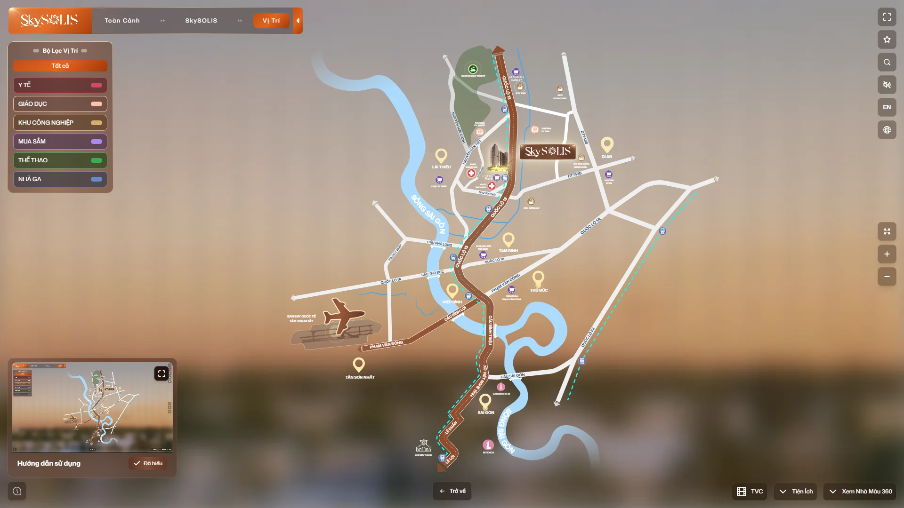
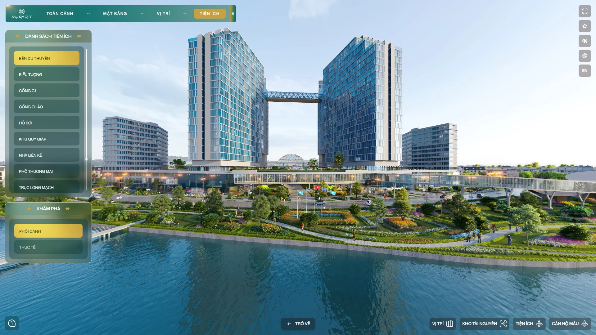

BÁO CÁO TIẾN ĐỘ IDP GIAI ĐOẠN 1 (THÁNG 10/2026)
Nhân viên: Nguyễn Anh Tuấn (Junior Frontend Developer) | Mục tiêu (03/2027): Middle Frontend Developer | Quản lý trực tiếp: Lý Gia Hoàng – Web Leader
Tóm tắt kết quả Giai đoạn 1 (Tháng 10/2026): Hoàn thành 100% mục tiêu ngắn hạn về Chuẩn hóa Tech Stack & Frontend Base qua 2 dự án thực tế
(SkySOLIS và Đảo Kim Quy),
đồng thời hoàn thành nghiên cứu đối sánh chuyên sâu cho mục tiêu dài hạn Giảm phụ thuộc vào krpano và thực hiện 3 đóng góp mở rộng cho đội ngũ.
1. Hai báo cáo chuyên sâu cho mục tiêu Ngắn hạn và Dài hạn
Mục tiêu ngắn hạn: Chuẩn hóa Tech Stack & Frontend Base
Đối chiếu mã nguồn nhánh main của dự án SkySOLIS (https://360.skysolis.my/)
và Đảo Kim Quy (https://vr360.daokimquy.vn/):
- Đồng nhất 100% bộ
package.jsongiữa 2 dự án. - Chia sẻ 76.7% cấu trúc code (
181/236files); trong đó 94 files (39.8%) giống nhau 100% không cần sửa code. - Đánh giá nhóm dependency trên 6 tiêu chí IDP và rà soát tinh gọn các gói không còn sử dụng.
Mục tiêu dài hạn: Giảm phụ thuộc vào công nghệ đơn lẻ (krpano)
Nghiên cứu và đặt lên bàn cân so sánh giữa krpano với Photo Sphere Viewer v5, Marzipano và Three.js / R3F Custom Engine:
- Đúc kết 9 giới hạn kỹ thuật thực tế khi tích hợp
krpanovào React/Next.js. - Bảng đánh giá đa chiều trên 12 tiêu chí (hiệu năng, khả năng tùy biến, bản quyền, khả năng mở rộng sang Web 3D...).
- Kết luận xây dựng Plan B công nghệ và tiếp tục thử nghiệm (POC) trong thời gian tới.
2. Những điểm cộng mở rộng trong Tháng 10/2026 (Plus Points)
1. Nghiên cứu, thực hiện & cải tiến dự án Landing Page + CMS
- Triển khai trang web nội bộ công ty https://goku.agency/ và trang Landing Page cho khách hàng https://thecollection688.com.vn/.
- Áp dụng Next.js + TypeScript, hoàn thiện giao diện theo đúng thiết kế và kết nối hệ thống CMS cho Backend.
- Hướng tới việc rút kinh nghiệm thực tế để tiến tới chuẩn hóa quy trình thực hiện một dự án Landing Page.
2. Hỗ trợ & hướng dẫn đồng nghiệp thực hiện dự án Imperia Sensa Park
- Hỗ trợ đồng nghiệp thực hiện bóc tách dữ liệu đầu vào từ khách hàng.
- Rà soát, đối chiếu và làm rõ thông tin cho phân khu thấp tầng.
- Đảm bảo dự án được triển khai với thông tin chính xác ngay từ đầu, hạn chế việc phải chỉnh sửa nhiều lần.
3. Hỗ trợ đồng nghiệp build ứng dụng Touchscreen dự án Keppel Celesta
- Phối hợp hỗ trợ đồng nghiệp cấu hình và build ứng dụng chạy trên màn hình cảm ứng (Touchscreen) tại Sale Gallery của dự án Keppel Celesta.
- Tinh chỉnh thông số hiển thị và thao tác chạm dựa sát trên cấu hình phần cứng mà khách hàng cung cấp.
3. Bảng theo dõi tiến bộ năng lực qua nhiệm vụ thực tế (70%)
| STT | Năng lực trọng tâm trong IDP | Baseline (09/2026) | Kết quả hiện tại (10/2026) | Dự án / Minh chứng |
|---|---|---|---|---|
| 1 | Chuẩn hóa Tech Stack & Lựa chọn kỹ thuật phù hợp | Các dự án cài đặt thư viện rời rạc, trùng lặp chức năng. | Đã đánh giá trên 6 tiêu chí và thống nhất bộ dependency cốt lõi cho dòng dự án Web360/Sa bàn ảo. | SkySOLIS & Đảo Kim Quy |
| 2 | Xây dựng kiến trúc Frontend rõ ràng, dễ maintain | Component gắn chặt với dữ liệu từng dự án, khó tái sử dụng. | Chia sẻ 76.7% cấu trúc code (181/236 files) giữa dự án cao tầng và thấp tầng. |
Báo cáo Tech Stack |
| 3 | Chủ động xử lý vấn đề Performance & UX | Xử lý khi phát sinh lỗi ở giai đoạn cuối dự án. | Chủ động áp dụng Multi-res Tiles 8K, throttle 120ms khi pan/zoom, giới hạn bộ nhớ Safari iOS và cache ETag. | Module ZoomableView, DeepZoomFloorPlan, room.js |
| 4 | Nghiên cứu giảm phụ thuộc vào krpano |
Phụ thuộc hoàn toàn vào krpano và cấu hình XML. |
Hoàn thành đối sánh 12 tiêu chí với Photo Sphere Viewer, Marzipano, Three.js; chuẩn bị dựng POC. | Báo cáo Đối sánh Web360 |
| 5 | Tự chủ triển khai, phối hợp BE & Hỗ trợ đồng nghiệp | Tập trung hoàn thành công việc cá nhân. | Triển khai Landing Page + CMS (Next.js/TS), hỗ trợ bóc tách dữ liệu Imperia Sensa Park và build app Keppel Celesta. | goku.agency, thecollection688.com.vn |
4. Minh chứng hình ảnh thực tế từ dự án SkySOLIS & Đảo Kim Quy
Nhấn vào từng ảnh chụp màn hình bên dưới để xem kích thước đầy đủ (1920×1080):

SkySOLIS • Toàn cảnh 360°

SkySOLIS • Vị trí DeepZoom

SkySOLIS • Mặt đứng & Lọc căn

SkySOLIS • Mặt bằng Tầng 8K

SkySOLIS • Nhà mẫu 360°

Đảo Kim Quy • Toàn cảnh 360°

Đảo Kim Quy • Bản đồ Vị trí

Đảo Kim Quy • Mặt bằng Phân khu

Đảo Kim Quy • Biệt thự Mẫu 360°

Đảo Kim Quy • Tiện ích 360°
5. Tự đánh giá (Self-Reflection) & Kế hoạch hành động Tháng 11/2026
| STT | Hành động cụ thể trong Tháng 11/2026 | Mục tiêu IDP liên quan | Kết quả đầu ra kỳ vọng | Thời hạn |
|---|---|---|---|---|
| 1 | Tiếp tục thử nghiệm thực tế (Build POC) cho công nghệ Web360 thay thế krpano |
Mục tiêu dài hạn: Giảm phụ thuộc vào một công nghệ duy nhất & Nghiên cứu Web 3D | Xây dựng bản POC bằng Photo Sphere Viewer / Three.js trên dữ liệu ảnh thực tế để đo đạc hiệu năng và khả năng gắn React Hotspot đa ngôn ngữ. | 25/11/2026 |
| 2 | Tách Base Template sạch & Đúc kết quy trình chuẩn cho dự án Landing Page + CMS | Mục tiêu ngắn hạn: Chuẩn hóa Tech Stack & Chuyển đổi sang TypeScript / Next.js | Làm sạch các thư viện không dùng trong Base Template Web360; tổng hợp kinh nghiệm từ goku.agency và thecollection688.com.vn thành quy trình chuẩn. | 27/11/2026 |
| 3 | Tổng hợp Guideline Tối ưu hệ thống hình ảnh & Checklist UX/UI | Mục tiêu ngắn hạn: Tối ưu hệ thống hình ảnh & Nâng chất lượng UX/UI | Tài liệu Guideline về lựa chọn định dạng ảnh, cắt multi-res tiles, lazy loading, quản lý bộ nhớ mobile và checklist kiểm tra UX/UI trước bàn giao. | 30/11/2026 |